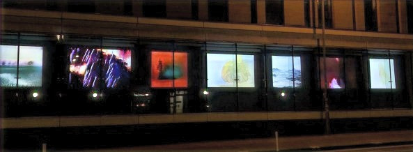
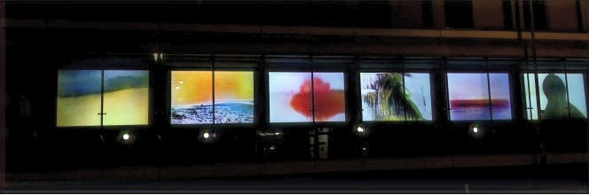
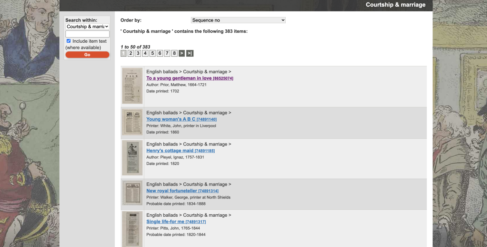
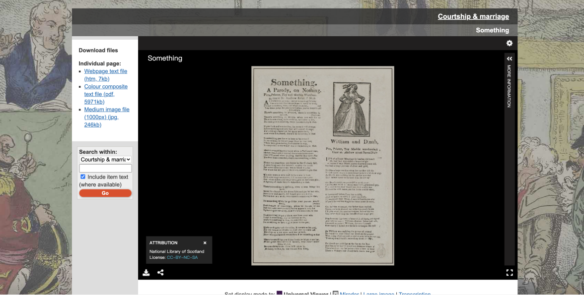
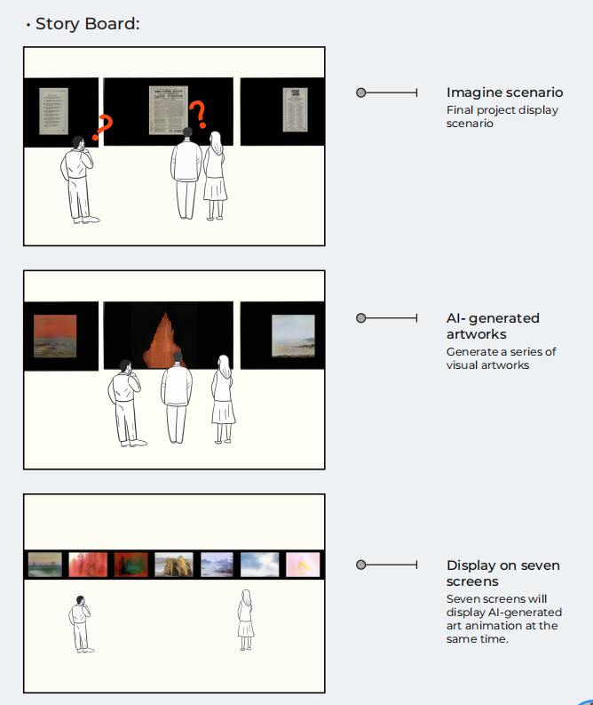
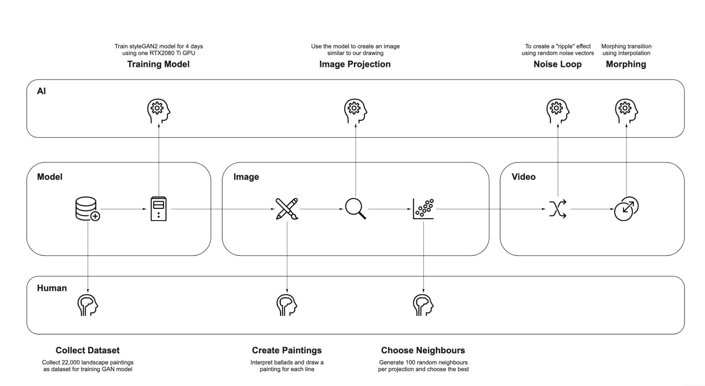
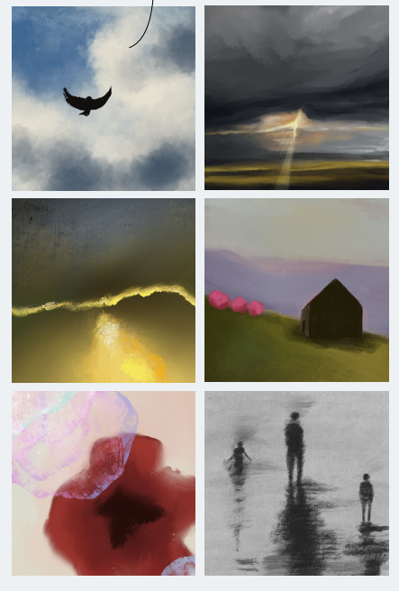
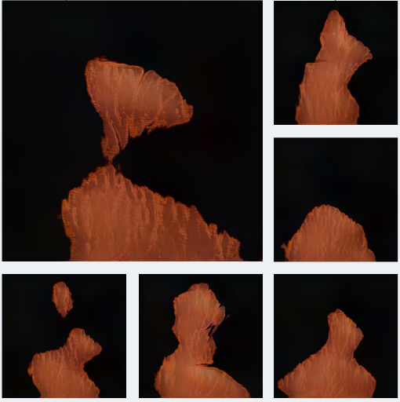
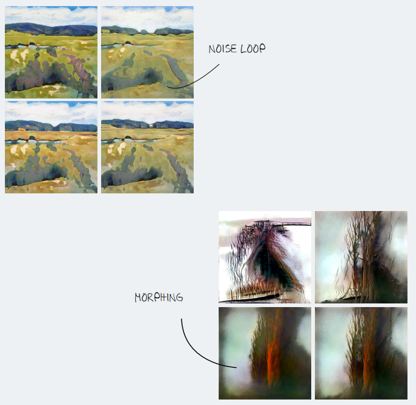

2021 / Digital media
[Digital Media] Ballads Illusion：Enhancing the Attractiveness of British Ballads with Human-AI Collaboration


Abstract
Can AI revitalize ancient literature in the form of contemporary visual art to enhance its attraction? Ballads Illusion is a Human-AI collaboration artwork created with the metadata for English ballads provided by the National Library of Scotland.
It aims to enhance the accessibility and attraction of cultural heritage to the people outside the cultural context. We focused on a special group—the "outsides" of British culture and investigated their interests in the English ballads. The team expresses perceptions of the cultural heritage with sketches as visual narratives.
A Generative Adversarial Network was trained with over 10,000 Scottish paintings, which empowered the sketches into novel representational possibilities. The transmedia approach preserved, presented and strengthened outsiders' understanding of cultural heritage with a vivid and affectionate insight. The cycle of empathy and creation from people, as the democratization, is expected to promote the development of participatory culture.
Furthermore, the participatory Human-AI collaboration tries to search the boundary of art in the era of AI and provoke discussion about the nature of art and the significance of AI-generated art with explicit intent.
Theory
Dataset: The primary dataset of interest is the English Ballads. It caught our eyes for its illustration of the British culture in the 19th century. The dataset contains over 2300 ballads published in newspapers 100 years ago, stored as images and transcripts on the website of the National Library of Scotland (https://data.nls.uk/data/metadata-collections/english-ballads/). The lyrics of these old ballads are like poems, depicting people's love for life, hometown, and family in the past through beautiful language. These ballads inspired our reveries of life, landscape, and culture in the 19th century's UK.
![[Digital Media] Ballads Illusion：Enhancing the Attractiveness of British Ballads with Human-AI Collaboration project image 3](../images/blog/ballads-illusion/03-b39af7-4f451a07cf65421282d61faad95409db.png)


The metadata of ballads on the NLS website
Aim: However, the accessibility of this historical dataset would be our primary concern. Nevile (2002) pointed out that the digital heritage as metadata stored on the web will be lost on account of its usable form for many users who cannot access it through the Internet and unattractive medium as jumbled manuscripts.
Also, many of the ballads were written in the local dialects, making audiences outside of the language background rather hard to understand the context.
Therefore, our project would try to create a novel presentation of English ballads and bring new lives to the dataset.
Form
Since the birth of the first autonomous artmaking by Harold Cohen in 1973, AI has shown great potential in art and creative work with various practices which caught the eyes of artists, data science experts, social activists and futurists. Considering its eye-opening artistic expression and possible enlightenment about the nature of art, creativity and how humans make sense of the world, our team is interested in exploring the new forms of the dataset through the Human-AI collaboration process. In conclusion, this project aims to enhance the accessibility and attraction of cultural heritage to the people outside the cultural context by Human-AI collaboration.
Research
Data accessibility of cultural heritage The data accessibility of cultural heritage comprises the openness at the physical level and is considered on the explorable dimensions and value for the audience.
In the digital revolution, many museums and public exhibitions are dedicated to creating new and more interactive ways and heuristic experiences for audiences about the heritage. The curators experimentally made subversive changes in the presentation of cultural heritage, aiming to inspire audiences within contemporary art and technology. As Sarah Kenderdine (2016) noted: "Museum visitors gaze through lenses that have been refined over many centuries". The new "lenses" covering more dimensions have produced a contemporary interpretation of cultural heritage and became the new possibility to improve the accessibility of cultural heritage (Arenghi, 2016).
More and more museums start to consider cross-media artistic expression. They try to liberate cultural heritage from the traditional media to explore the dialogue between culture, people, and forms of mediums. With the development of new tools and platforms, this cultural practice has bred a hybrid between the recording of traditional metadata and promotion kits, which is named a "transmedia narrative" (Jenkins, 2006).
The new medium acts as a unique information channel that externalizes the understanding of the world, thereby stimulating the audience to reconstruct the comprehensive meaning through the design and even complete the joint construction of cultural heritage value from the perspective of democratization (Scarpati, 2016). Many primitive cultural heritages have produced new practices under the empowerment of art, design and new technologies, which have been re-sublimated by collective intelligence and derived the participatory culture.
Transmedia The transmedia collaboration combining written works (such as folk songs and poetry) with visual art has always popular among creators. It inspires a new creation and brings different narrative methods to cultural content—some attempts to convert artworks into writing, like ekphrastic poetry (Kennedy, 2015).
Most of them often refer to a poem inspired by an art piece, such as a painting or a sculpture.
It covers imaginative scenarios which evoke feelings of the audiences. It revivifies the motivation of the painting from a literal perspective. Other artists create visual art from poetry using painting or video to visualize poetry or abstractly create new meaning. These new visual works can brighten the eyes of the audience and allow people to build cognitive and emotional resonance between text and visual art.
AI in Art
- AI-independent art creation Since the birth of the first autonomous artmaking by Harold Cohen (2017) in 1973, AI has shown great potential in art and creative area and caught people from different areas like artists, data science experts, social activists and futurists etc. It considers its eye-opening artistic results and the enlightenment about the nature of art, creativity and understanding the meaning of the world. AI-generated artwork is expected and examined from different points of view. Beyond the technology-oriented exploration like graphic style transfer, the artists' cross disciplines and cultures have created various artworks and events. They aiming at unanswered questions about "what does it mean to be creative and artistic, which seems to be unique for the human being," "what is the role of creative AI in the artwork made by a human," and" how can creative AI system empower the cultural communication and creativity." The new outcomes from them are motivating more practices interplaying with new trends in the era of data.
- Human-AI collaboration in art Some researchers and artists pointed out that AI should be approached as a collaborator instead of a tool in the creation process. Sougwen Chung, as an award-winning artist, stated (2020) that the inspiration was generated by thinking about the anthropomorphic avatar of AI when she was engaging with the AI-collaborative work. The AI in the collaboration was considered with far-reaching artificial consciousness interplaying with her, which drove her to examine the" authorship and agency" of the work. Daniel Ambrosi, recognized as one of the founding creators of the AI art movement, claimed (2017) that AI-enabled a specific artistic intent to his creations, which made his work more intricate, mysterious, and graceful beyond his level of imagination. Hence, he treated the AI as an excellent collaborator who taught and inspired him to see the world from a new perspective. Based on marvellous AI artwork and artist discourse, the value of human-AI collaboration is identified as it creates an expressive form in its way and allows the audience, including the artist in collaboration, to reconstruct the understanding of the original data in their interaction with the artwork. In addition, the participation of AI has also contributed to the democratization of art. Humans are treated equally for the mystery and complexity of art in which AI is deeply involved. More people have the qualifications to create art and to interpret art through AI-human collaboration. This gives us a new perspective on how to develop transmedia of English ballads in a more expectant form while enlightening the audience into the stories and scenes depicted in ballads at the same time.
GAN Art
However deeply is an AI involved in artistic creations, the technical details are always the first and foremost point of interest. We are in a twilight era of AI artwork where it’s still more important to create AI as a tool of art than exploring how to use the tool itself. Before we can delve into creating AI artworks, we have to look at the latest examples in AI-Art models.
As we are looking to generate images from ballads, we researched on text-to-image GANs, the most prominent of which is the StackGAN by Han Zhang et al.(2017). But after trying it, we found this genre of models currently do not possess the flexibility needed for artworks. We decided to focus solely on image GANs.
One of the prominent open-source GAN art projects is the GANGogh, based on the Wasserstein GAN model (Martin Arjovsky et al. 2017). It is one of the first well-documented projects to generate detailed novel artworks of specific genres. Another project, the AICAN (Ahmed Algammal et al. 2017), received commercial success and global media attention when they produced gallery-worthy art pieces. However, these models generate artworks randomly, and cannot be guided by a human operator, and thus doesn’t fit in our Human-AI collaboration concept. The StyleGAN family is a series of wonderful technical breakthroughs by the NVIDIA research team (Terro Kerras et al. 2017, 2019, 2020, 2020). At present, it’s latest release, StyleGAN2-ada, is one of the most state-of-the-art GAN models in the world. It has many wonderful features like: high resolution, great variability, latent space, etc. The most valuable feature to us is that it can create projections of existing images, meaning we can guide its creation in a Human-AI collaborative way.
Design Context:
Our project would generate a series of visual artworks for indoor galleries since the spatial arrangement can promote a specific learning experience to trigger emotional reactions and inspire empathy. The audiences are expected to be attracted by the visual moving images and have some new thoughts about the dataset.

Story board
Practice
GAN Model
- Dataset collection
There are open-source pre-trained models of StyleGAN2 available to us, but after testing a few models, we found them unable to satisfy our needs. To recreate a dreamy and colourful effect with our GAN model, we chose to collect the dataset ourselves and train the model from the ground up. Copyright issues regarding GAN training data are still a controversial issue in the legal domain. To avoid this issue, we gathered our training data using flikr.com to fllter out desired images with a "Modifications Allowed" licensing.
To ensure a model with good resolution, we pre-processed our data by removing all images with a resolution under 800x800 and resizing the remaining images to precisely 1024x1024. This leaves us with roughly 22,000 images.
- Model training We trained our model using NVIDIA's official release of StyleGAN2-ada. Training configuration is paper1024, same as the MetFaces 1024x1024 resolution training done by NVIDIA. Training is done on a single RTX2080Ti GPU, which is able to train with a batch of 4,000 images roughly every 20 minutes. After about four days and 1,100,000 images, we finished the training, going through our dataset 500 times.
- Model Iteration After the model is trained, it's used to generate a projection image with an input of our own painting. In the process, some paintings cannot be projected by the model satisfactorily. This is largely because our dataset consists of landscape paintings and lacks the likeliness of objects. As our measure to make the model more expressive, we added paintings to the dataset: around 5,000 paintings of houses, boats, flowers, birds, people. With the added data to the dataset, the model was trained 24 hours.

The pipeline of the Human-AI collabration
Image Creation
- Creating a Target Painting For a project to help express the ballads in an image form, the ballads have to be interpreted. At first, we tried to have each line of the ballads interpreted by a Natural Language Processing (NLP) model. But it later became clear to us that the variety and expressiveness of ballads are far from interpretable by today's NLP technology. In the end, we decided that interpreting the ballads is a task best suited for the human mind.
We create a painting for the ballad we want to interpret. Based on the content of the line, the painting can be of a certain object, scenery, or abstract colours and shapes. We first analyzed the contents of the ballads to categorized the keywords and emotional words, then, based on the keywords, to do the paintings. We took seven ballads as examples and drew five illustrations per ballad, so we produced 35 illustrations in total. All the illustrations were painted on the Procreate.
The drawing is then used as a target image for our GAN projection. This way, we essentially guided our AI based on the content of the ballads. For the public exhibition on the Inspace Screens, we are going to use all seven screens.
- Image Projection A trained StyleGAN2 model is able to generate new artworks with a designated random seed. However, this kind of image generation is completely random and doesn't allow us to influence the resulting image in any way.
Luckily, the state-of-the-art StyleGAN2 uses a progressive, growing architecture that generates images from a latent vector. In our case, every image generated by the model can be represented by a 512 dimension vector. A small change in the latent vector itself corresponds to a slight change in the resulting image. This feature allows the model to search in the latent space for a specific image incrementally, a process called projection. With each step of the search, the model will generate an image closer to a target image.
With this functionality, we can use the drawing of our creation to guide the model to generate a similar image by projecting our illustration to the model's latent space. However, the projecting ability of a model does have limitations. Some details of the drawing can be lost in translation. This means that sometimes we don't get quite what we want, while other times the projection results can be a pleasant surprise.

Some original illustrations drawn by our team
- Neighbour Selection As the "human mind" of the project, we want the generated image to be expressive, full of dramatic colours and interesting texture. As mentioned before, because the projection done by the AI is purely by mathematically minimizing the distance between target image and projection result, sometimes the image projection doesn't produce quite the results we want. Even if the projection results are great, there might be better outcomes of the resulting image near them. For this reason, we perform a neighbour selection process on each projected image. With each projection, the result comes to its 512 dimensions latent vector. We can add a 512 dimension Gaussian random vector on the latent vector, and the resulting vector can generate a neighbouring image in the latent space. This image will look similar to the original projection result, with the shapes, texturing and colouring slightly different. We generate 100 random neighbours for each projection result and select the one most to our liking as the final projection result.

Original version (upper left) and neighbours
Generating Video Sequence
- Video Concept As we mentioned before, we produced 35 paintings, five from each of the seven selected ballads, to be exhibited on the Inspace Screens. After our styleGAN model played its part, we have 35 images composed of human and AI collaboration.
To enhance the effect of these images, we composed seven videos, each representing a ballad. Assisted by the powerful functionality of latent space, we are able to create a flow of images with noise loop and interpolation. A noise loop allows the image to "jitter" around the centre image, creating a rippling effect in the video. An interpolation from one latent vector to the next creates a silk-smooth morphing from one image to another. Combining the two transitioning effects created a video of what we consider a vibrant and hypnotizing effect.
- Noise Loop We implemented the noise loop with the same technique as the neighbour selection process by adding a random noise vector to the latent vector. Each time we add a random noise vector to the latent vector, we created a "stop." For each image, we created seven such stops. Every stop is a noise added upon the latent vector before it. Then we linearly interpolate between each pair of the stops, creating 30 frames. In a 30 fps video, the seven stops after the original image take up 7 seconds to run through.
- Morphing Between these images, we morph from an image to the next again by linearly interpolating between latent vectors. Each interpolation has 150 frames and accounted for 5 seconds of running time.

Noise loop and morphing feature
Reflection
We have constructed a transmedia visual artwork based on the human-AI collaboration to present English ballad data to the audience in a brand-new way. From the words written by the lyricist to their visualization and through the work with deep learning algorithms, ballads illusion provides a new platform for people outside the culture with an experimental visual presentation. The audience's understanding of the changes in the colours and elements in the artwork stimulated empathy for the stories and emotions behind the ballads. It developed a deep interest in the cultural background. This novel narrative provides a pioneering reference for the data-based cultural heritage.
In the human-AI collaboration, we found that the right to interpret our visual works is unique to the designers and tends to be a cultural democracy constructed by multiple parties, including algorithms and audiences with different cultural backgrounds. This nonlinear creative process also liberated the designers, allowing us to get a lot of enlightenment about AI art and transmedia practice.
Transmedia has brought improvements in the accessibility and attractiveness of the metadata with Fuzziness in the storytelling. The Fuzziness, challenging respect for cultural connotation carried by data and appealing explanation is not contradictory. The transmedia retains, exhibits, and continues to enhance outsiders' understanding of the emotion expressed by the ballads. It uses vivid and affectionate ways to resonate with the audience and facilitate participatory culture in the form of democratization. The decisive outcome from AI-generated artwork, mysterious and appealing dynamic effects, and the changing content seem to annotate the ballads and arouse the audience's empathy outside the culture. It makes people think that to what extent empathy can transcend the original cultural background of the audience.
As some AI artists claimed, the relationship between AI and human-being in art has changed from "AI-generated" to "AI-enhanced" form, so that the co-creation with humans and AI has really emerged. Based on our creation, we have a new understanding of the role of ai in artistic creation and cultural narrative. Instead of a tool for artificial intention, AI is treated as a seasoned artist under our supervision who also has subjective consciousness and art expertise during cooperation and creation. This benefit stems from the collaboration with AI and communicability, which is quite enlightening and not completely controllable.
Compared with traditional artwork that is completed independently by humans, the co-creation of AI and humans has produced a subversive change in the creative process with more exploratory value to the outcome. Furthermore, compared with some previous AI-generated works regarding AI as a tool, which is criticized as "not to be identified as art," this kind of in-depth collaboration even gives a new intention of artistic creation and brings the designer and the audience together into an unknown world.
Outcome
The exhibition video is presented at the Inspace with seven screens.
Contribution
This is a group project done by me with LI Peize, SUN Wenbei and XU Jiangnan, who gave birth to the artwork together with their diverse backgrounds as graphic designers, AI engineers and researchers. I took the responsibility of the project ideation, research and evaluations including the literature review and precedent research of Data accessibility, Transmedia, AI in art and the artwork with GAN. Moreover, I took part in the pre-process of the data and deep learning model construction.